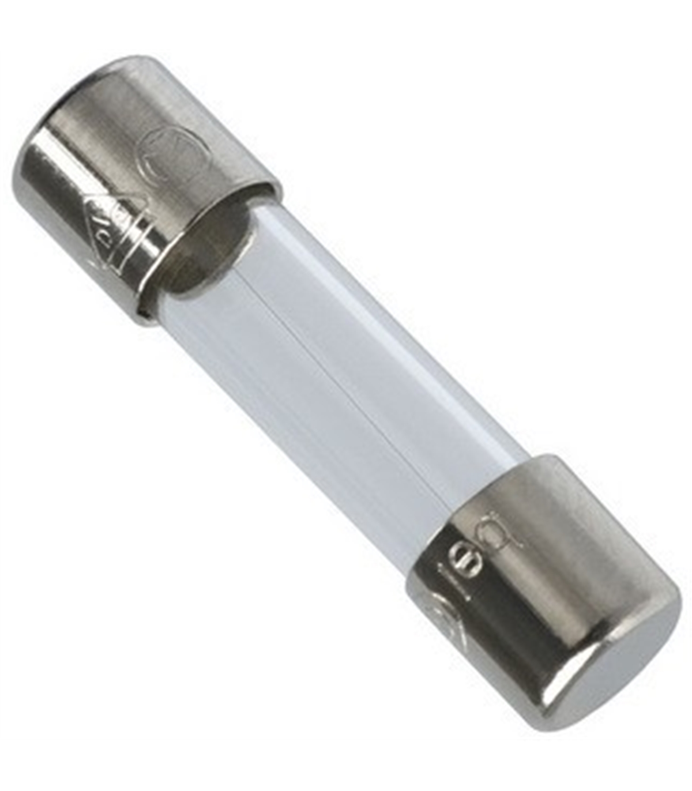

Fusíveis
-
Em eletrónica e em engenharia elétrica, um fusível é um dispositivo de proteção contra sobrecorrente em circuitos. Consiste num filamento ou lâmina de um metal ou liga metálica de baixo ponto de fusão, que se intercala num ponto de uma instalação elétrica para se fundir, pelo efeito Joule, quando a intensidade de corrente elétrica que o percorre supera um determinado valor. Isto ocorre devido a um curto-circuito ou sobrecarga, prevenindo danos à integridade dos condutores e reduzindo o risco de incêndio ou destruição de outros elementos do circuito.
- Fusíveis de Cartucho
- Fusível de Cartucho (Cartridge Fuse): Utilizado em diversas aplicações elétricas e eletrónicas, geralmente em painéis elétricos e eletrodomésticos.
- Fusíveis de Vidro
- Fusível de Vidro (Glass Fuse): Comum em dispositivos eletrónicos e eletrodomésticos, oferecendo proteção contra sobrecarga e curto-circuito.
- Fusíveis Cerâmicos
- Fusível Cerâmico (Ceramic Fuse): Oferece maior resistência e capacidade de interrupção, utilizado em aplicações de alta corrente e alta tensão.
- Fusíveis de Lâmina
- Fusível de Lâmina (Blade Fuse): Comumente encontrado em automóveis para proteger circuitos elétricos, fácil de substituir.
- Fusíveis de Disparo Térmico
- Fusível Térmico (Thermal Fuse): Interrompe o circuito quando a temperatura atinge um nível predeterminado, usado em aparelhos que podem sobreaquecer.
- Fusíveis de Alta Ruptura
- Fusível de Alta Ruptura (High Rupture Capacity, HRC Fuse): Projetado para operar em correntes elevadas, utilizado em indústrias e aplicações comerciais.
- Fusíveis de Ação Rápida
- Fusível de Ação Rápida (Fast Acting Fuse): Responde rapidamente a sobrecorrentes, usado em dispositivos sensíveis que requerem proteção rápida.
- Fusíveis de Ação Lenta
- Fusível de Ação Lenta (Slow Blow Fuse): Proporciona um atraso na resposta a sobrecorrentes, ideal para circuitos com surtos de corrente temporários.
- Fusíveis de Montagem em Superfície
- Fusível SMD (Surface Mount Device Fuse): Projetado para montagem em superfície em placas de circuito impresso, usado em dispositivos eletrónicos compactos.
- Fusíveis Resetáveis
- Fusível Resetável (Resettable Fuse): Pode ser reutilizado após uma sobrecorrente, comum em aplicações onde a manutenção fácil é desejável.
- Fusíveis Automotivos
- Fusível Automotivo (Automotive Fuse): Especificamente projetado para uso em veículos, disponível em vários formatos e tamanhos para diferentes aplicações automotivas.
- Fusíveis de Cartucho Industrial
- Fusível de Cartucho Industrial (Industrial Cartridge Fuse): Utilizado em instalações industriais para proteção de equipamentos de alta potência.
- Fusíveis de Faca
- Fusível de Faca (Knife Blade Fuse): Utilizado em aplicações industriais onde é necessário um fusível de alta corrente e fácil substituição.
- Fusíveis para Aplicações Específicas
- Fusível para Multímetro (Multimeter Fuse): Projetado especificamente para proteger multímetros contra sobrecorrente.
- Fusível para Eletrodomésticos (Appliance Fuse): Usado em diversos eletrodomésticos para proteção contra falhas elétricas.